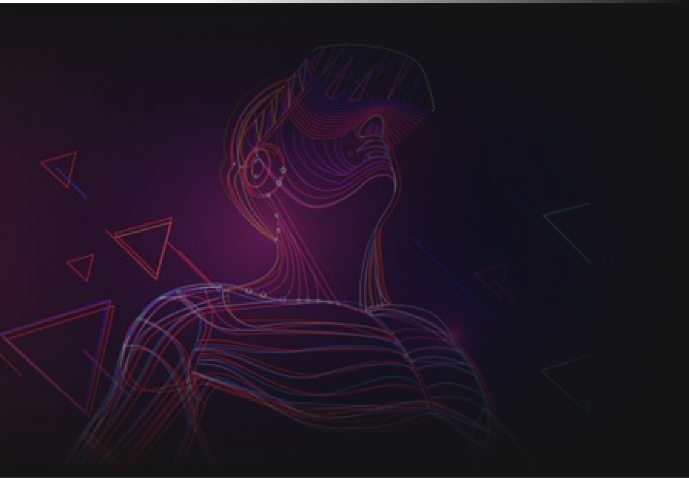

In Jan 27, 2022, a TikTok video of a Chinese mother of eight locked up in a worn-out village shed with a chain
around her neck went viral and sparked widespread outrage.
While authorities released a series of conflicting reports and kept official media silent, a blow of ANGRY WIND swept through the social media.
@Fengxian County Publicity Department
After the preliminary investigation verification, the
mother got married with Dong in August 1998, and there is no human trafficking.
Family members and neighbors reported that Yang often beat children and elderly people for no reason.
According to the diagnosis of medical institutions, Yang is suffering from mental illness. At present, she
has been treated and her family has been further assisted to ensure a warm Spring Festival. The details are
under further investigation and verification.
@Xiaoshe Sun
53K followers
Official reports from Fengxian has already overdrawn
the credibility of local government. Interest groups are worried that when the “radish” is pull up by public
opinions, the “mud” of sloth administration, concealing and lying, together with the blood and tears of
local women and children will be revealed. We need a higher-level investigation team to overthrow the local interest network from the outside and bring fair back.
“
The investigation progress of this incident is largely driven by the public opinions on the
Internet. It proved that Internet public opinion has a great amount of positive energy and has
become an indispensable part of the driving force for China’s governance progress.
@
Xijin Hu, former chief editor of Global Times



DESIGN WITH DATA
When people are talking about the Metaverse, emigrating to Mars and other fancy things
alike, it’s unbelievable that in some impoverished rural areas, even the most basic human rights are being violated. That’s why I started a design
project focusing on this incident
Since most public discussions of this incident happened online, I decided
to create my design with the social media data.
Through this work, I aimed to demonstrate the incomparable strength of public opinion visually, and call for
more awareness and actions towards human trafficking and many other social issues alike.
DESIGN QUESTIONS
With the data, I focused on answering following questions:
1
What voices were made in different stages of this saga?
Who were influencers of this incident?
2
How to portrait the overview of public opinions?
3
Are there similar cases around the world? Where and how many?
4
How to reflect data humanism in visual design?
123
The Great
Proletarian Cultural Revolution, the darkest age of Modern China, when millions of people suffered from
political persecution
Post-truth is a
time when "objective facts are less influential in shaping public opinion than appeals to emotion and personal
belief"
REFLECTION
Public Opinion and State Governance Complement Each Other
"We don't have enough to eat". My grandfather
spent 10 years in jail simply because he spoke out true condition of their lives.
Today no wonder we live in a society that allows more freedom of speech. Yet we still see
authorities censor politically sensitive topics heavily by deleting posts and accounts, banning articles,
controlling trendings, etc.
Instead of being afraid of or turning a deaf ear to public voices, the government should
embrace them, and make positive changes. Public voice CAN make a difference, it's not just about saving victims of human trafficking, it's about eliminating social injustice and prejudice.
Think Twice of What
You Say
Powerful as public voice is, we should remind ourselves not to fall into the trap of post-truth.
And let our rationality and conscience guide us, rather than irrational emotion and bias.
What Role Does Data
Visualization Plays?
I think data visualization is not only about telling the story of data, but about what is
behind these data: people. It's about telling stories of our life,
society, and this world; exposing injustices; provoking empathy, reflection and action, and providing valuable
insights and solutions.